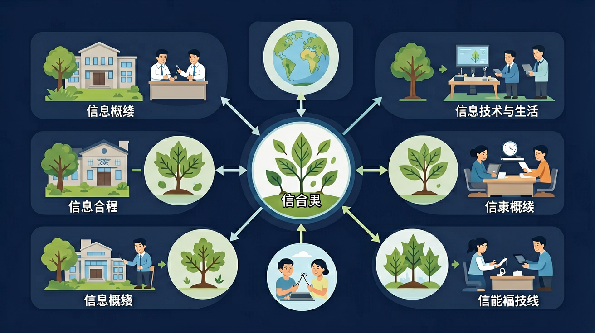

不用紧张，猜一猜也可以 😊
1️⃣ 你知道"传感器"是什么吗？
2️⃣ 你觉得手机"知道"你转了方向，是靠什么？
3️⃣ 下面哪个场景 没有 用到传感器？
先独立作答，再点选项查看对错与错因。
下列哪项是智能家居必须的组成部分？
电子猫眼能自动拍照是因为安装了：
远程关闭空调主要利用了：
智能窗帘的____能根据时间自动触发开合
答案：定时程序
预设程序控制执行机构
指纹锁通过比对____特征来识别身份
答案：指纹
生物识别技术应用
关于物联网的正确理解是：
为老人房设计三个智能设备
❓ 为什么手机屏幕会自动旋转？
❓ 扫地机器人怎么知道哪里没扫过？
❓ 体温枪不碰皮肤也能测体温靠谱吗？
学完这一课，这些问题你都能自信地回答。
🎯 能说出3种常见传感器的工作原理
🎯 能判断生活中5种设备是否使用传感器
🎯 能分析传感器误报的2种常见原因
把传感器拆解为敏感元件+转换元件+信号处理三部分
就像人的感官，传感器是机器的感觉器官
对比红外与超声波传感器探测距离的差异
观察电梯门防夹装置的红外发射接收器
设计教室自动关灯系统的传感器方案
✅ 红外、超声波等非接触式传感器
💡 将触觉经验过度迁移
✅ 需要经过AD转换和算法处理
💡 忽略信号处理环节
口诀：感知转换信号传，生活处处有机关
类比：传感器就像门卫，检测到信息就向大脑（处理器）报告